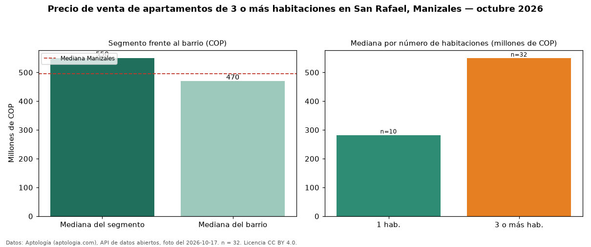

Precio de venta de apartamentos de 3 o más habitaciones en San Rafael, Manizales — octubre 2026
En San Rafael, Manizales, la mediana de precio de venta de apartamentos de 3 o más habitaciones es COP 550 millones, según 32 avisos vigentes. Eso la ubica 11 % por encima de la mediana de Manizales para apartamentos de 3 o más habitaciones (COP 495 millones). Son 73 % de los 44 avisos de apartamentos en venta del barrio, cuya mediana general es COP 470 millones (+17 %). En el mismo barrio, la mediana es COP 282 millones con 1 habitación (n = 10). Datos: Aptología (aptologia.com), API de datos abiertos, licencia CC BY 4.0 — https://www.aptologia.com/venta/manizales/san-rafael. Archivos: PDF de 2 páginas, CSV con las cifras y gráfica PNG.

| Avisos únicos | 32 |
|---|---|
| Percentil 25 | — |
| Mediana | COP 550.000.000 |
| Percentil 75 | — |
Fuente: avisos vigentes de portales inmobiliarios recopilados por Aptología, deduplicados (mínimo 30 avisos únicos por celda). Precios pedidos, no cerrados. Fecha: 2026-10-18.